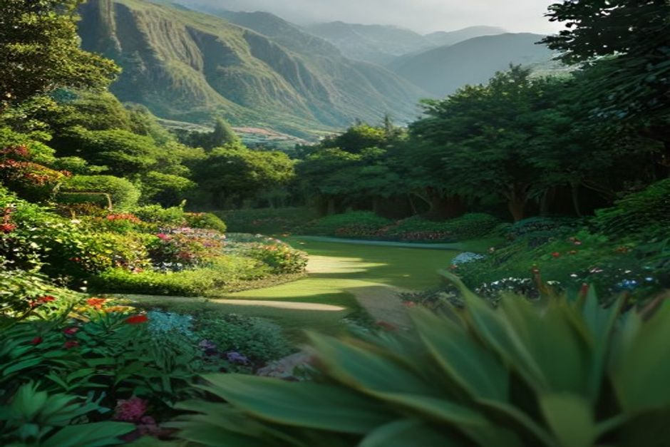
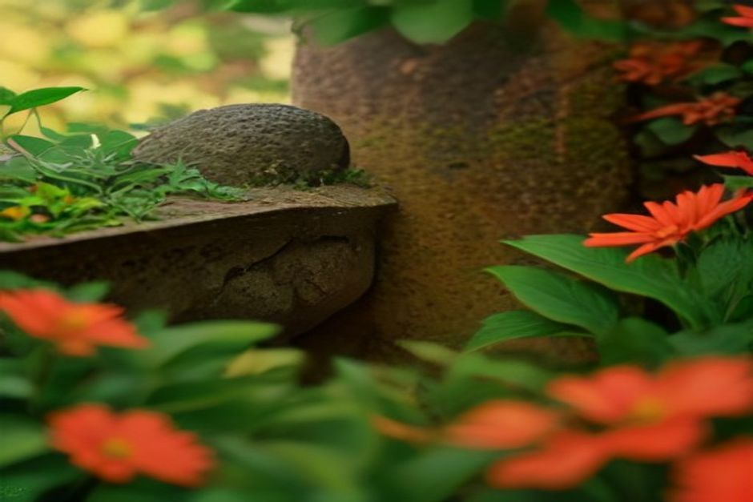

Chi cerca "giardini Madeira" si ritrova davanti una lista lunghissima, e dopo due giorni sull'isola si accorge che non può vederli tutti. La buona notizia è che molti stanno vicini: il Giardino Botanico di Madeira, Monte Palace e il giardino delle orchidee si coprono in una mattina. Qui sotto trovate i parchi che meritano davvero, raggruppati per il tempo che avete e non per una classifica.
Madeira è chiamata l'isola dell'eterna primavera, e nei giardini si capisce perché: il caldo subtropicale e l'umidità dell'Atlantico fanno crescere quasi tutto, dai rododendri dell'Himalaya alle strelitzie africane. Il clima cambia ogni poche centinaia di metri di quota, quindi ogni giardino ha un carattere suo.
Se avete solo una mattina: la collina sopra Funchal
Tre giardini stanno a pochi minuti l'uno dall'altro sopra la città. Con la funivia di Monte che parte dal centro storico, si organizza tutto senza noleggiare un'auto. Se volete aggiungere la discesa in slitta, ci sta nella stessa mattinata.
Monte Palace Tropical Garden
È il parco più completo dell'isola e quello che consiglierei a chi viene per la prima volta. Su 70.000 metri quadrati di collina trovate un giardino orientale, un lago con le carpe koi, un muro di azulejos portoghesi, un percorso nella foresta di laurisilva e un museo con più di 700 tra minerali e pietre semipreziose.
A pranzo, accanto al lago centrale, c'è il concerto "Music at the Monte". Se potete, organizzate la visita attorno a mezzogiorno.

Il Giardino Botanico di Madeira (Jardim Botânico)
Chi digita "giardino botanico di Madeira" cerca quasi sempre questo. Sorge su terrazze a picco sulla città e raccoglie oltre 2.500 specie, esotiche e autoctone, in aiuole fitte e colorate. La parte più riuscita è la sezione geometrica di cactus e piante succulente.
Il biglietto si paga, ma la vista su Funchal e sulla baia è uno dei panorami più belli dell'isola. Da qui si arriva a piedi, in pochi minuti, al giardino delle orchidee e alla stazione della funivia.
Jardim Orquídea, il giardino delle orchidee
Una piccola serra, fitta di piante, con alcune centinaia di specie e ibridi di orchidee, più anthurium, bromelie e piante carnivore. Si vede bene in mezz'ora, quindi è un'aggiunta comoda e non una meta a sé.
Se avete un pomeriggio: la quiete di Palheiro
Palheiro Gardens (Quinta do Palheiro) è l'opposto di Monte Palace. È un giardino di tenuta all'inglese, a 500 metri sopra Funchal, con aiuole formali, grandi prati, sentieri nel bosco e una delle migliori collezioni di camelie d'Europa.
Lo ha sviluppato per due secoli la famiglia Blandy, quella del vino di Madeira. Ha ancora l'aria di una proprietà privata più che di una tappa turistica: ci si va per il silenzio quanto per le piante.
Lì vicino c'è la Quinta Jardins do Lago, il giardino di un hotel in attività aperto anche a chi non alloggia. È disegnato attorno a un cannone del Settecento e a una serie di laghetti, con una vegetazione tropicale che regge il confronto con i giardini a pagamento della zona. È meno noto di Palheiro, ma abbinarli ha senso.
Giardini in città: gratuiti o quasi, e senza folla
Non tutti i giardini di Madeira richiedono una mezza giornata o un biglietto. In centro a Funchal ce ne sono tre, e si incastrano facilmente in una passeggiata.
- Jardim Municipal do Funchal: vicino ad Avenida Arriaga, piccolo e gratuito. Vialetti con le palme, un chiosco della musica e ombra a cinque minuti dalla cattedrale. È il posto dove si siedono i residenti.
- Jardim de Santa Catarina: un parco più ampio, gratuito, a picco sul mare tra il centro storico e la marina. Ha un piccolo lago, una cappella e aiuole che cambiano con le stagioni. È meno curato dei giardini botanici più in alto, ma si trova a due passi dal porto: è la tappa naturale prima o dopo una gita in barca.
- Quinta das Cruzes: il giardino del museo, nascosto dietro il centro storico, è più tranquillo e più selvatico. Tra alberi del drago e orchidee ci sono frammenti archeologici, come infissi di finestre e portali scolpiti recuperati da edifici storici demoliti in città. Per chi vuole giardini senza la folla di Monte o del Botanico.
Due giardini diversi da tutti gli altri
Fajã dos Padres, il giardino che si coltiva ancora
Non è un parco formale, ma uno vero, in produzione: una stretta fascia di terrazze con banani, manghi e viti a livello del mare, sotto scogliere di 300 metri. L'hanno piantata i gesuiti secoli fa e si coltiva ancora oggi.
La maggior parte dei visitatori ci arriva con la funivia dalla scogliera. Secondo noi il modo migliore è dal mare, a una nuotata dalla barca. È la sosta che inseriamo nel Day Trip di Chifbay, con partenza dalla Marina do Funchal, pontile C, alle 10:00 o alle 14:00. In barca siete soli, fino a 5 persone, e il prezzo è per tutta l'imbarcazione: 500 euro fino a Ribeira Brava, 600 se si prosegue fino a Ponta do Sol. Si passa anche da Câmara de Lobos e Cabo Girão, e si fa il bagno con le tavole da paddle a Fajã dos Padres.

Ribeiro Frio, il verde di montagna
A 900 metri di quota, vicino all'allevamento di trote, i piccoli giardini ornamentali di Ribeiro Frio sono fatti di felci, ortensie e camelie. Il clima non ha niente a che vedere con quello della costa: fresco, umido, all'ombra della laurisilva autoctona.
Non è un giardino da raggiungere apposta. È una pausa verde lungo la strada verso il belvedere di Balcões, ma il contrasto con i giardini della costa si nota subito.
Madeira non ha un unico grande giardino: ne ha una dozzina, ognuno plasmato da un microclima diverso a poche centinaia di metri di distanza.
Quando andare e come organizzarsi
Qualcosa fiorisce sull'isola tutto l'anno. La stagione più ricca va dalla fine dell'inverno alla primavera, da febbraio a maggio: camelie, agapanti, strelitzie e jacarande.
Se avete una sola mattina, mettete insieme Monte Palace, il Giardino Botanico e il giardino delle orchidee. Se avete più tempo, dedicate un pomeriggio a Palheiro e un giorno diverso al mare, per vedere le terrazze di Fajã dos Padres. Per i biglietti d'ingresso, controllate prezzi e orari sui siti ufficiali prima di andare: li cambiano.
Un'ultima idea: i giardini in città e il Botanico si alternano bene alla giornata in barca. Prima il verde in collina, poi il mare, oppure il contrario.